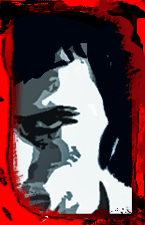

Терапевт
TERAPEVT. Под этим ником скрывается наполненный Рэпом и сильный характером стойкий человек.
Кислый
Известен в группе как Композитор Кислый. В каждой песне, своими яркими битами и тяжёлыми басами, он даёт о себе знать, тем самым каждый раз поднимая группу на новый уровень. Griffer
Griffer. родился в г. Бишкек в 1989 г. Самый молодой, но ни чем не уступающий участник группы =PLB=. Общий знакомый
описание,,,,,,,,,,,,,,,,,,,,,,,,,,,,,,,,,,,,,,,,,,,,,,,,,,,,,,,,,,,,,,,,,,,,,,,,,,,,,,,,,,,,,,,,,,,,,,,,,,,,,,,,,,,,,,,,,,,,,,,,,,,,,,,,,,,,,,,,,,,,,,,,,,,,,,,,,,,,,,,,, Михак МС
описание,,,,,,,,,,,,,,,,,,,,,,,,,,,,,,,,,,,,,,,,,,,,,,,,,,,,,,,,,,,,,,,,,,,,,,,,,,,,,,,,,,,,,,,,,,,,,,,,,,,,,,,,,,,,,,,,,,,,,,,,,,,,,,,,,,,,,,,,,,,,,,,,,,,,,,,,,,,,,,,,, Лена
описание,,,,,,,,,,,,,,,,,,,,,,,,,,,,,,,,,,,,,,,,,,,,,,,,,,,,,,,,,,,,,,,,,,,,,,,,,,,,,,,,,,,,,,,,,,,,,,,,,,,,,,,,,,,,,,,,,,,,,,,,,,,,,,,,,,,,,,,,,,,,,,,,,,,,,,,,,,,,,,,,,
 =LURE=
=LURE= =HiP - HoP Iнфекция=
=HiP - HoP Iнфекция= =Featuring=
=Featuring=